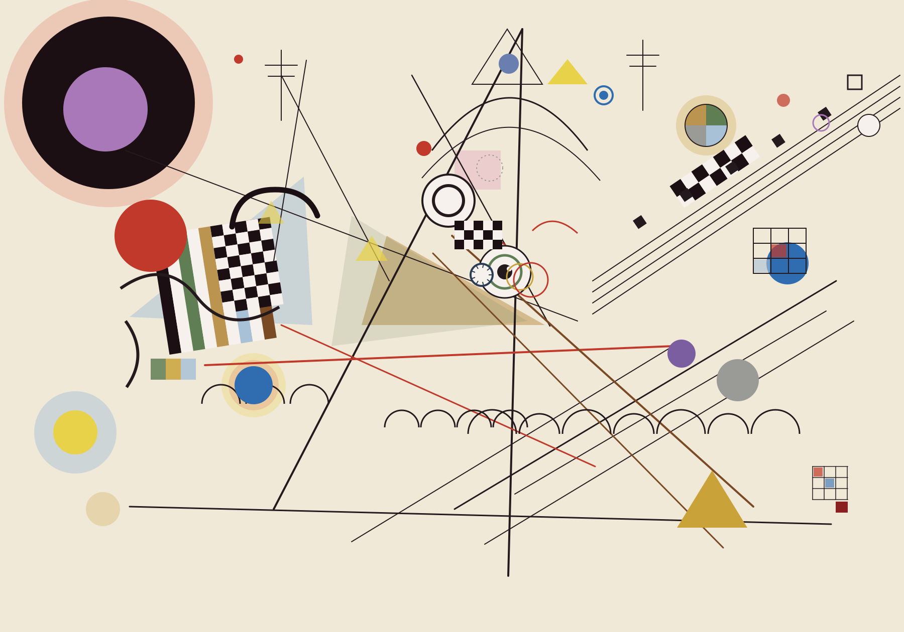

Composition VIII · Canon in D
After Kandinsky · fragments gather into instruments
🖱 拖拽：元素聚合 / 松手：回到原图
⌨ 1·钢琴 2·小提琴 3·吉他 4·八音盒
⌨ 5·全部聚合 0·回到原图 L·锁定
audio loading 0%
○
🎹 Piano [1]
○
🎻 Violin [2]
○
🎸 Guitar [3]
○
🎵 MusicBox [4]